23 面部下三分之一：颏部丰容
面部下三分之一颏部丰容
23.1 引言
面部和谐可定义为面部元素的平衡。颏部丰容是改善面部和谐的有力方法，特别是对于颏部后缩的患者。下颌后缩（Retrognathia）是一种下颌骨相对于上颌骨位置更靠后的状况，使其看起来像有严重的深覆合。手术上，这可以通过切割下颌并将其向前移动来矫正。这是一个相当具侵入性的过程，伴有相当大的风险和恢复期。使用羟基磷灰石钙（CaHA）可以以最小的风险、不适感和恢复期为患者提供改善，并能显著改善面部和谐。
23.2 年龄相关的解剖学变化
由于骨吸收，下颌骨会改变形状。颏部体高、颏角高度和颏部体长都会显著减小，导致颏角增大。双颏角距离（左右下颌角的距离）在衰老过程中不会显著改变 [1,2]。如面颊丰容章节所述，面颊的向下移位对形成松弛下垂（jowls）有显著贡献。由于骨吸收作用，下颌角会向内侧移动。附着于骨骼的软组织也会随之被带到内侧。颏部保留韧带阻止了前下方移位，导致松弛下垂积聚在该韧带上方，这极大地加重了面部松弛下垂。同时，颏部的下颌骨也出现骨吸收，减小了颏部的骨骼体积。这一过程可能加剧游离的“歌剧院线”（marionette lines）和前松弛下垂沟（pre-jowl sulcus）的凹陷。因此，在颏部进行体积替代填充可能有助改善下颌轮廓，并减轻前松弛下垂沟和歌剧院线的深度。
23.3 解剖学危险点
下唇动脉和颈部深层动脉都是面动脉的分支，走行于该区域深处，尽管并非所有患者都有，因为这些动脉可能具有皮下水平的环绕或分支。颏神经和颏动脉源自颏孔，位于大致的中瞳孔线，略高于下颌骨嵴（图 23.1）。
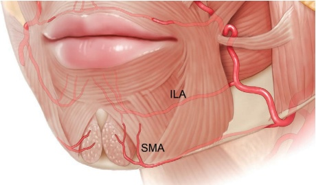
应避免直接注射到松弛下垂脂肪间隙内，因为这可能导致美学上不佳的加重松弛下垂。
在西方文化中，女性理想的颏部宽度大约等于双眼间距，或从鼻小柱到下唇红边（vermilion border）的距离。理想的颏长大约等于从下唇红边测量的双眼间距。对于男性，理想的颏部宽度与口周宽度相同。
在亚洲文化中，理想的颏部应更窄、更尖，以凸显面部的“心形”。
23.4 套管针技术 1（前向投影）
注射定位，参见图 23.2。
23.4.1 分步技术
-
考虑在颏部皱襞的中线进行颏肌神经阻滞和局部麻醉。
-
清洁并标记最大投影的宽度和垂直位置，同时考虑施泰纳线（Steiner's line）。
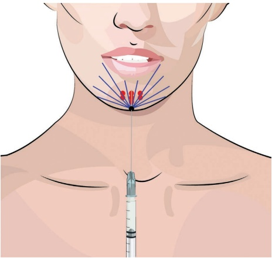
-
在颏沟正中处用 23G 锐针预刺孔。
-
使用未稀释的羟基磷灰石钙（CaHA）和 25G、38 mm 的钝性套管针。
-
用非惯用手抬起颏肌，将钝性套管针推进至骨膜，到达颏肌两腹之间的间隙（图 23.3）。
-
确保钝性套管针尖端不可见于口腔黏膜内。
-
在骨膜上注射多个团注，每个团注约 0.1 mL。
-
避免注射点过近入口点，以防产品在浅表处积聚。
-
如有必要，也可以从该入口点向外侧注射更多沉积物，可作用于颏肌、下唇提肌和口角下拉肌（图 23.4）。
-
此外，还可以从该入口点注射皮下逆行线性填充，以平滑效果、明确下颌轮廓以及减少前颈部沟和飞扬纹。
-
检查对称性。
-
塑形至所需形状。
23.5 钝性套管针技术 2（前向投影、拉长和塑形）
注射定位，参见图 23.5。
23.5.1 分步技术
- 考虑在颏沟正中处进行颏神经阻滞和皮肤局部麻醉。
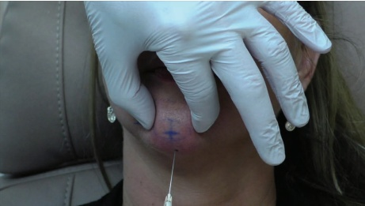
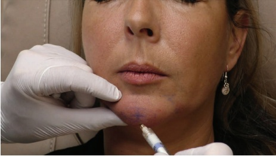
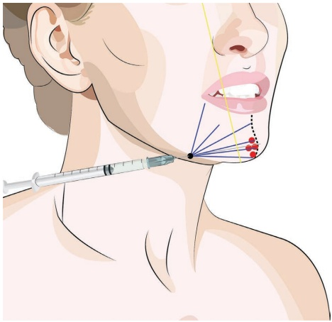
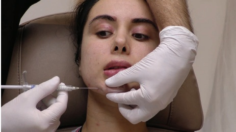
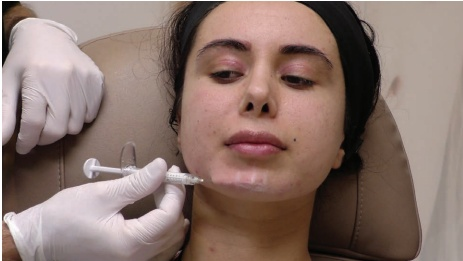
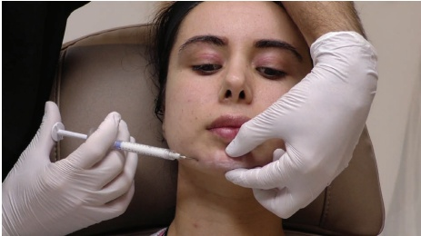
-
清洁并标记最大投影的宽度和垂直位置，同时考虑施泰纳线（Steiner's line）。
-
使用 21G 锐针在预颏沟处打前孔。
-
通过皮肤进入，将钝性套管针游移至颏肌下的骨膜处并推进至中线。
-
在骨膜水平放置多个团注，直到达到所需的下巴前投影（图 23.7）。
-
为轮廓塑形和延长下巴，沿着下颌缘放置多条向后线性填充丝，同时注意理想的颏部宽度（图 23.8）。
-
用非惯用手抬起颏肌（图 23.6）。
-
使用未稀释的 CaHA 和 22G、50 mm 的钝性套管针。
-
必要时，也可从此处治疗预颏沟和小鱼颏线。
-
向回牵拉至进入点并沿皮下平面重新推进。
-
塑形至所需形状。
-
检查对称性。
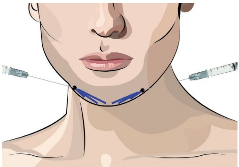
23.6 男性颏部增厚钝性套管针技术
注射定位，参见图 23.9。
23.6.1 分步技术
-
考虑进行颏神经阻滞。
-
清洁并标记最大投影的宽度（与口周宽度相同）和垂直位置，同时考虑施泰纳线。
-
使用未稀释的 CaHA 和 25G、38 mm 的钝性套管针。
-
在预颏沟内侧标记进入点。
-
沿下颌缘推进钝性套管针（图 23.10）。
-
在下颌缘注射总计约 0.5 mL 的浓稠向后线性填充丝（图 23.11）。
-
检查对称性。
-
塑形至所需形状。
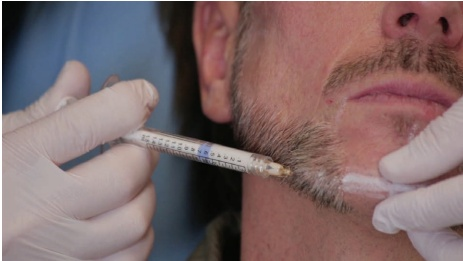
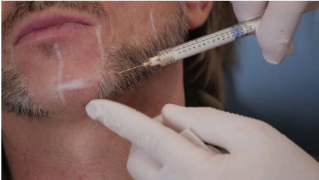
23.7 锐针技术
23.7.1 分步技术
注射定位，参见图 23.12。
-
考虑进行颏神经阻滞。
-
对消毒并标记最大投影的宽度和垂直位置，需考虑斯泰纳线（Steiner's line）（图 23.13）。
-
使用未稀释的 CaHA 和 27G 锐针。
-
在最大投影点选择锐针的进入部位。
-
用非惯用手抬起颏肌，将锐针直推至骨膜，到达颏肌两腹之间的间隙。
-
在骨膜上注射多个团注，每团约 0.1 mL（产品将被置于多个解剖层次）（图 23.14）。
-
为增加投影，也可从骨膜向皮肤方向注射反行性线性丝。
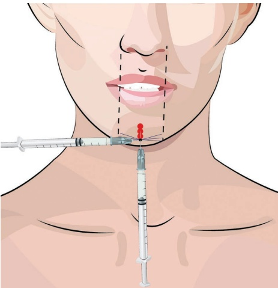
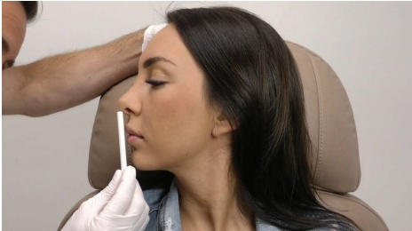
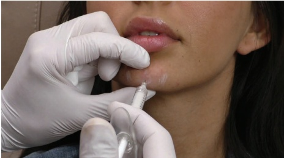
羟基磷灰石钙软组织填充剂
-
作为创造一个不那么尖锐的突起的次要选择，可从相同的入点，在皮下脂肪层进行多个向后延伸的线性层次（retrograde linear threads），根据需要操作（图 23.15）。
-
最后，为使下颊部与颏部形成平滑过渡并减轻尖锐的下巴外观，可在口角到颏沟区域放置皮下向后延伸填充剂。
-
检查对称性。
-
塑形至所需形状。
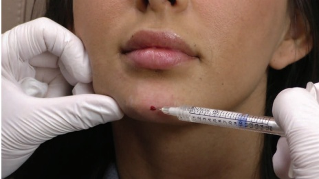
有关术前和术后效果以及应用技术，请参阅图 23.16。
23.8 术后护理
如有必要，可手动按摩该区域以使产品均匀分布。
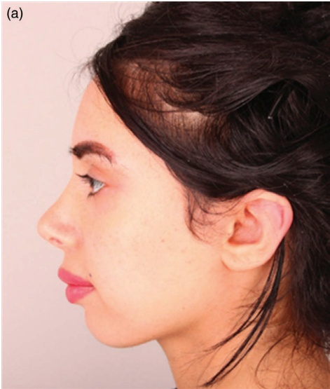
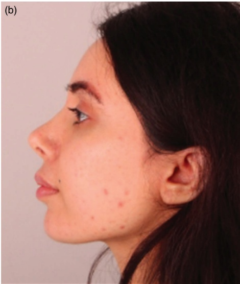
23.9 为达到最佳效果的附加治疗
可使用肉毒毒素治疗颏肌，以减轻法令纹和前突。该治疗可在应用羟基磷灰石钙（CaHA）之前进行，以降低与肌肉收缩相关的 CaHA 产品移位的风险。在塑造下巴后，应评估整个口周区域，并可能通过向颏沟、预卧垂沟和/或马里昂纹注射额外的 CaHA 或其他填充剂进行调整。
参考文献
[1] R. B. Shaw et al., “Aging of the facial skeleton: Aesthetic implications and rejuvenation strategies,” Plast Reconstr Surg, vol. 127, no. 1, pp. 374–383, 2011.
[2] B. Mendelson, C. H. Wong, “Changes in the facial skeleton with aging: Implications and clinical applications in facial rejuvenation,” Aesthetic Plast Surg, vol. 36, no. 4, pp. 753–760, 2012.